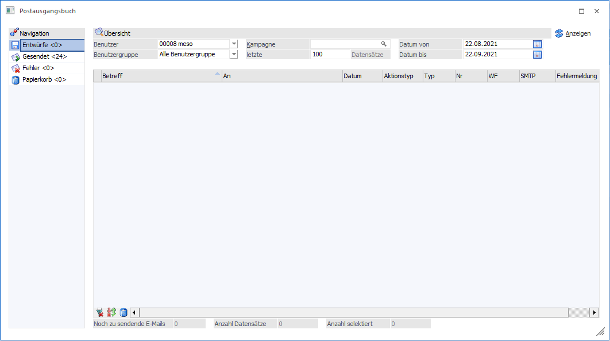
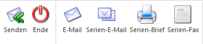

Das Postausgangsbuch ist ein Programm, welches auf der einen Seite die Ausgabe von Korrespondenzen erleichtern soll, auf der anderen Seite dient es als Journal, womit nachvollzogen werden kann, wer wann welche Korrespondenz erhalten bzw. verschickt hat.
Das Postausgangsbuch kann über folgende Varianten gestartet werden:
ü Ribbon "INFO CENTER UND
MAKROS"
Im Ribbon "INFO CENTER UND MAKROS" wird der Button "Postausgangsbuch"
ausgewählt. Hierdurch wird das Postausgangsbuch im Bereich "Entwürfe"
geöffnet.
ü Button "Aktionen"
Der Button
"Aktionen" steht in vielen Programmfenstern, z.B. "Namen Suchen", "Kampagnen",
"CRM Daten Cockpit" oder "Personenkontenstamm", zur Verfügung. Durch Anwahl der
Aktion "eMail senden", "Brief schreiben" oder "Fax" öffnet sich das
Postausgangsbuch im Bereich "Neue Nachricht", in welchem die jeweilige Nachricht
erzeugt werden kann.
ü WinLine Menü
Über den
Menüpunkt
1 CRM
1 Postausgangsbuch
wird das Postausgangsbuch im Bereich "Entwürfe" geöffnet.

Die Tabellenspalte "Typ" kann folgende Werte beinhalten:
ü Debitoren/Kreditoren
ü Interessenten
ü Ansprechpartner
ü Kontakte
ü Vertreter
ü Arbeitnehmer
Die Navigation im Postausgangsbuch erfolgt über den linken Navigationsbereich mit den Einträgen:
ü Entwürfe <Anzahl>
ü Gesendet <Anzahl>
ü Fehler <Anzahl>
ü Papierkorb <Anzahl>
Buttons

Um eine neue Nachricht zu kreieren und diese zu versenden, stehen im Ribbon folgende Buttons zur Verfügung:
Ø Senden
Durch Anwahl des Buttons werden E-Mails, Briefe bzw. Faxe sofort gesendet bzw. an den Drucker übergeben. Falls eine Office-Vorlage gewählt wurde, werden die Daten an Microsoft Office übergeben.
Ø Ende
Mit dem Button "Ende" wird das Postausgangsbuch beendet.
Ø E-Mail
Mit der Option kann eine E-Mail an einen oder mehrere Empfänger versendet werden.
Ø Serien-E-Mail
Mit der Option "Serien-E-Mail" kann eine E-Mail an einen oder mehrere Empfänger versendet werden. Im
Gegensatz zu "E-Mail" kann die Sendung aufgeteilt und eine "Test Serien-E-Mail" gesendet werden.
Ø Serien-Brief
Mit dieser Option kann ein Serienbrief an einen oder mehrere Empfänger aus der WinLine
gedruckt werden.
Ø Serien-Fax
Mit der Option "Serien-Fax" kann ein Fax an einen oder mehrere Empfänger aus der WinLine versendet
werden.